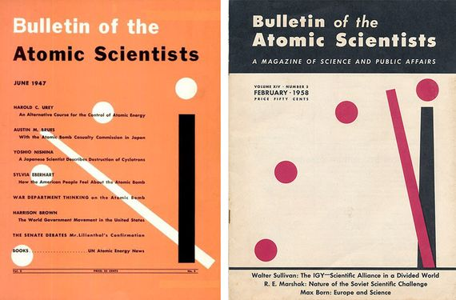
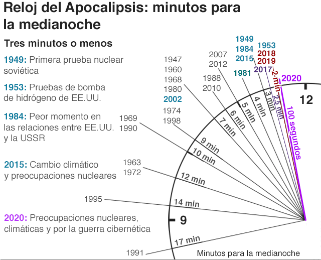

También llamado Reloj del Juicio Final) es un reloj simbólico, mantenido desde 1947 por la junta directiva del Bulletin of the Atomic Scientists (Boletín de Científicos Atómicos) de la Universidad de Chicago, Estados Unidos, que usa la analogía de la especie humana estando siempre “a minutos de la medianoche”, donde la medianoche representa la “destrucción total y catastrófica” de la Humanidad. Originalmente, la analogía representaba la amenaza de guerra nuclear global, pero desde hace algún tiempo incluye cambios climáticos, y todo nuevo desarrollo en las ciencias y nanotecnología que pudiera infligir algún daño irreparable.
En 1945, un grupo de investigadores que trabajaban en el Proyecto Manhattan en la Universidad de Chicago creó The Bulletin of Atomic Scientists, una revista cuya misión, vigente aún hoy en día, era la de alertar a todo el mundo sobre los peligros de la energía nuclear y otras armas de destrucción masiva.
Su creación fue en 1947, como su primera representación por miembros del Boletín de los Científicos Atómicos., cuando el cofundador de la revista, Hyman Goldsmith, le pidió a la artista Martyl Langsdorf (esposa del físico del Proyecto Manhattan Alexander Langsdorf Jr.) que diseñara una portada para la edición de la revista de junio de 1947. El número de minutos para la medianoche —que mide el grado de amenaza nuclear, ambiental y tecnológica para la Humanidad— es corregido periódicamente.

Tras discutir varias ideas, Martyl optó por la idea de "usar un reloj para simbolizar la urgencia". Su plan fue repetir la imagen cada mes con un color de fondo distinto. Para ver como quedaría, dibujó su primer boceto (la parte superior izquierda de un reloj, con el minutero acercándose a medianoche) en la contraportada de un volumen de sonatas de Beethoven.
El Bulletin lleva con orgullo sus orígenes, en los cuales figura de forma preeminente el nombre de Albert Einstein quien el 2 de agosto de 1939 firmaba una carta (escrita en realidad por su colega Leó Szilárd) dirigida al entonces presidente de EEUU, Franklin Delano Roosevelt, para llamar su atención sobre la posibilidad de utilizar la reacción en cadena del uranio para construir “bombas extremadamente potentes de un nuevo tipo”. Einstein cerraba su misiva sugiriendo que el gobierno de la Alemania nazi podía estar explorando esta vía.
Aquella carta ha sido calificada como uno de los documentos que cambiaron el mundo un mes después estallaba la Segunda Guerra Mundial. Y aunque la reacción de Roosevelt no fue inmediata, aquel fue el primer paso hacia lo que en 1942 tomaría cuerpo como Proyecto Manhattan, que a su vez desembocó en los bombardeos nucleares de Hiroshima y Nagasaki en agosto de 1945, poniendo fin a la contienda global. Los científicos implicados conocían bien el propósito final de su trabajo, aunque muchos de ellos se opusieron a su uso contra la población civil y se sintieron horrorizados ante las consecuencias. También Einstein, que no trabajó en el proyecto, lamentó haber firmado aquella carta.
En 2020 fue el año donde El Boletín de Científicos Atómicos advierte de que la humanidad nunca ha estado tan cerca de la autodestrucción.El pasado año, el reloj se paró a 100 segundos del fin del mundo, la marca más cercana del apocalipsis, que se repite este año.
“La humanidad continúa afrontando dos peligros existenciales simultáneos: la guerra nuclear y el cambio climático, que se ven agravados por un multiplicador de amenazas, una guerra de informacióncibernética, que socava la capacidad de respuesta de la sociedad”. Aseguran las científicos del El Boletín de Científicos Atómicos.
El reloj se puso en marcha cuando empezaron las detonaciones nucleares, a mediados del siglo pasado. Es la fecha con más consenso para el origen del Antropoceno, la época geológica marcada por el impacto global de las actividades humanas. La crisis de los misiles situó las manecillas muy cerca del fin del mundo. Sin embargo, en la década de los noventa, tras firmarse entre EE UU y Rusia el Tratado de Reducción de Armas Estratégicas, el reloj se retrasó hasta los 17 minutos, el tiempo más alejado del fin de la humanidad en todos estos años.
En 2007 se incluyó el cambio climático como un peligro grave para la humanidad que demanda una respuesta “urgente e inmediata”. Desde entonces, la manecilla del reloj no ha dejado de acercarse a la simbólica medianoche.
Este comprime en un solo año todo lo que ha pasado el planeta desde la vida que esta hubiera emergido en marzo, los organismos multicelulares en noviembre, la aparición de los dinosaurios hacia finales de diciembre y los humanos hubieran hecho su arribo hacia las 23:30 del último día del año.
En 2007 el reloj pasó por un rediseño gráfico y conceptual; el primero, obra del diseñador Michael Bierut, buscaba una adaptación a los tiempos actuales, y este era también el propósito del segundo al incorporar la gran amenaza de nuestra época, el cambio climático, junto con otros peligros debidos a tecnologías disruptivas como la Inteligencia Artificial o las armas biológicas.
“La guerra nuclear a gran escala, una vez empezada, puede causar una catastrófica pérdida de vidas y disrupción de la sociedad en horas, mientras que la catástrofe del clima tarda décadas o siglos y empeora cada año que seguimos emitiendo dióxido de carbono a la atmósfera”
Explica a OpenMind el físico climático y planetario de la Universidad de Oxford Raymond Pierrehumbert, miembro del Consejo de Ciencia y Seguridad del Bulletin y coautor del tercer informe del Panel Intergubernamental de Cambio Climático de la ONU.
“Sin embargo, las condiciones que hacen más probable el cambio climático catastrófico —desarrollos tecnológicos (favorables o desfavorables), negociaciones de tratados, hostilidades internacionales, respeto a la ciencia— se desarrollan en la misma escala temporal de décadas que los factores que afectan al riesgo de guerra nuclear”.
el propósito no es tanto advertir sobre la mayor o menor cercanía de las consecuencias desastrosas del cambio climático como sobre el estado actual de la acción humana que puede acelerarlo o retrasarlo. Así, señala Pierrehumbert
“Es apropiado valorar los riesgos tanto de guerra nuclear como de disrupción climática usando la misma metáfora del reloj”.
Y esta percepción influyó en gran medida para que en 2020 los expertos del Bulletin situaran la aguja más cerca de la medianoche que en toda su historia: 100 segundos, una valoración ratificada también en la revisión del reloj de 2021.
